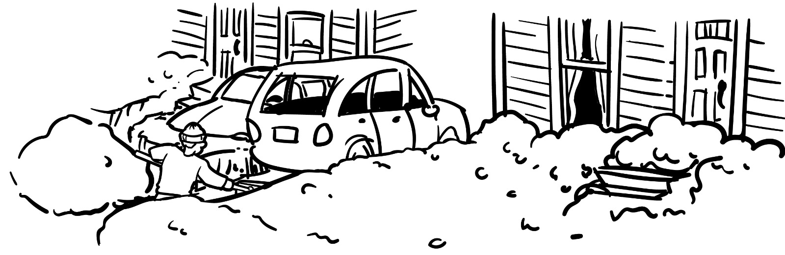
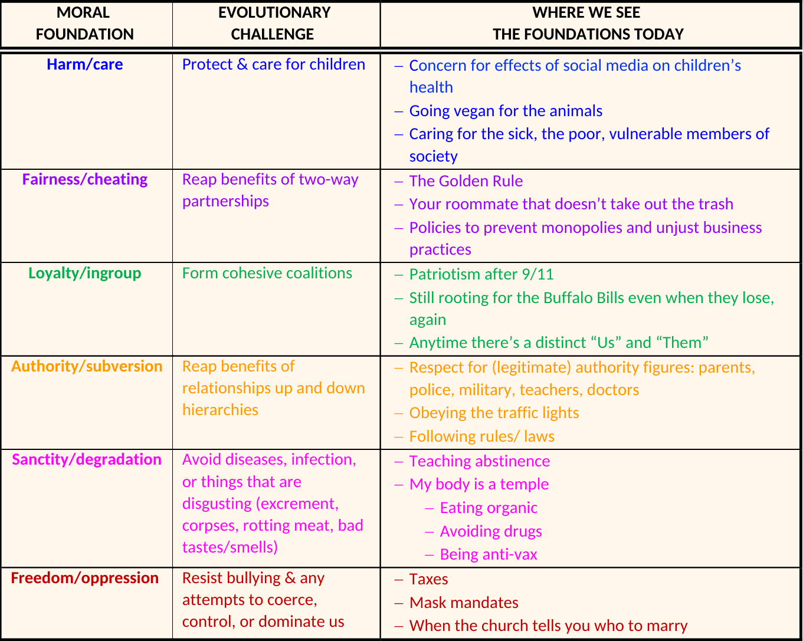
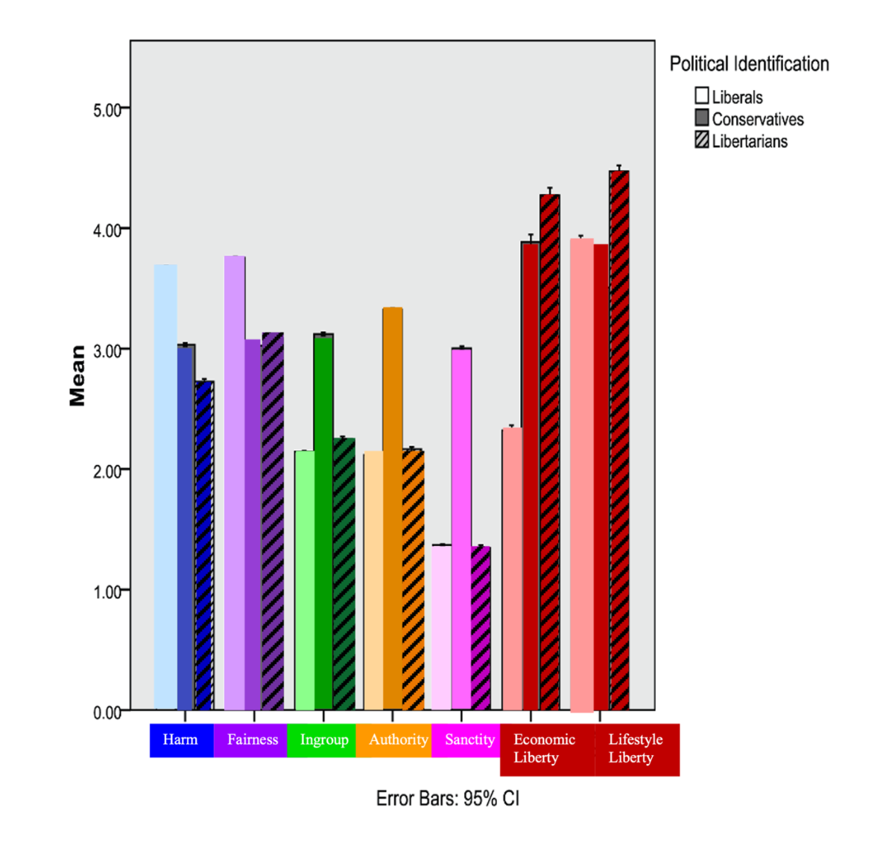

blog
-
08 Feb 2023
The Case Against my Deadbeat Neighbors -
01 Feb 2023
Moral Foundations 101 -
25 Jan 2023
Escaping Conversational Purgatory -
14 Jan 2023
Are Political Conversations Pointless?
______________________
______________________ | ___ min read
_____________________________
The Case Against My Deadbeat Neighbors
Illustrations by @sammetzlerart
08 Feb 2023 | 3 min read
I live in on the first floor of an old house in Rochester, New York. It’s been repurposed into two apartments, so I share a driveway with my upstairs neighbors. It snows a lot in Rochester, which means that the driveway has to be shoveled fairly often. You wouldn’t think that someone could mess up the construction of a driveway, but the layout is, in a word: horrendous. The problem is that there’s only one lane through which you can enter the two-lane driveway. Unfortunately, the left side, my side, is not aligned with the entrance. So, when I pull in, I have to immediately turn the wheel like a sea captain whose ship has veered off course in a storm. All of this is exacerbated when it snows, and the already narrow entryway becomes even more snug.
I could live with it if this was the only issue, but, here’s the thing—my neighbors don’t really shovel. And on the rare occasion that they do, they only clear their side of the driveway. Whenever I shovel, I have no choice but to do the shared entrance, along with their side, and mine. If this story made you feel a twinge of anger on my behalf, thank you, and congratulations—you’re human. We are very good at keeping tabs on those who attempt to take advantage of us. This relates to something called reciprocal altruism. It’s a fancy way of saying you scratch my back, I’ll scratch yours… or else. The fact that I was the only one doing the “scratching” violated our universal notion of fairness. It unleashed a whole host of emotions in me, along with some expletive filled rants directed at my slacking neighbors.
A sense of fairness is found across cultures, though we have different ideas about what that means in practice. Conservatives strongly endorse the idea that people should not be shielded from the consequences of their actions, or in the case of my neighbors, inaction. Nobody likes to have their efforts exploited, but conservatives really don’t like this. In their minds, you get out what you put in—that’s fair. This is known as proportionality. Liberals agree with proportionality, but not as enthusiastically. They tend to think of fairness in terms of equality, sometimes at the expense of proportionality (i.e., socialism). A less extreme example would be those who advocate for a higher minimum wage, and any other policies aimed at making society more equal. Like many issues, this is a spectrum—not all liberals are socialists nor all conservatives cut-throat capitalists.
In general, I find that I have less-maddening conversations with conservatives when I emphasize the “get out what you put in”/karma angle of fairness. (This is the advice of Professor Jonathan Haidt, the creator of Moral Foundations Theory). For their part, conservatives would do well to remember that equality matters, too—and that liberals will frequently think of fairness in those terms. Of course, all of this assumes that you’re even willing to consider another person’s concept of “fair.”
We may have different ideas about fairness and which tax rates or wages are reasonable, but we can all agree on this much: it’s time for my neighbors to start shoveling.
*For a deeper dive into the differences between proportionality and equality, start here
_____________________________
Moral Foundations 101
25 Jan 2023 | 2 min read
*Disclaimer: Graphics are adapted from Haidt and Joseph 2004 and Iyer et al, 2010
I mentioned in my last post that Moral Foundations Theory (MFT) is the most compelling explanation I have ever encountered for the differences between liberals, conservatives, and libertarians. But as useful as it is, MFT is overwhelming and a bit academic. There’s no way around that—probably because it attempts to categorize all of the messiness that is human behavior.
Rather than going piece by piece, I’m just going to rip the band-aid off and unload everything all at once.
There are 6 foundations in total. Each is a response to a recurring evolutionary problem. For example, how do I know that you won’t screw me over if I help you? This is the basis of the fairness foundation. It motivates us to gossip about, punish, and avoid cheaters. The table below illustrates each foundation.
Moral Foundations Table
Adapted from Haidt and Joseph 2004

Phew. You’re almost there. One more graph and you’ll be ready to single-handedly solve America’s polarization.
Now we know how the foundations came to be and what purpose they serve. What’s missing is how much the different parties value each foundation in relation to each other. This is (arguably) the most useful part of MFT as it reveals the tradeoffs each side is willing to make to promote their preferred issues. We’ll discuss this more in future posts, but the following graph combined with the table above is your “Rosetta Stone” for understanding politics.
Moral Foundations Graph
Adapted from Iyer et al, 2010
*Note: sanctity = purity

You made it.
This will all make more sense with practice. Once you get the hang of it, you may even come to understand your conservative uncle (or liberal son) and why they keep acting like such hypocrites.
_____________________________
Escaping Conversational Purgatory
25 Jan 2023 | 5 min read
I spent my first year out of college working as a substitute teacher. Part of this job involved getting called at 5 AM:
“Good morning, Mark, do you want to teach 7th grade science today?”
I don’t want to teach 7th grade anything… on any day. I was still holding out hope for a high school teaching job.
“…Sure.”
Being a substitute teacher was like being at war with myself. I used to be the kid in the back of the room making the sub’s life hell. Karma is real. The best part of my day as a sub was when I got to read during free periods. Shockingly, I didn’t last long as a teacher.
While subbing was basically babysitting with worse pay and more responsibilities, I am grateful for that time in my life. I found myself constantly reading about psychology and I discovered an endless fascination with human behavior. It’s partly what led me to change careers, pursuing my master’s in public health.
It was also during this time that I realized I was suffering from a sort oflearned helplessness whenever I engaged in political conversations. This can happen when someone continuously faces a negative situation which they believe they have no control over—they become conditioned to stop trying. In some ways, this is an entirely logical response to our repeatedly awful interactions. When was the last time you left a debate saying, “You know, I think I really opened their eyes on the whole gun issue.”
In hindsight, the problem wasn’t that they weren’t hearing me, it was that I never changed my tactics. I was essentially testing the definition of insanity.
The good news is that it is possible to escape this purgatory. With the right resources/tools, a person can reframe the conversation and thus change the interaction. Enter Moral Foundations Theory.
Don’t be fooled by its nondescript title. Moral Foundations Theory (MFT) remains the single most compelling explanation I have ever encountered for the differences between Liberals and Conservatives.
Several years ago, Professor Jonathan Haidt and colleagues developed a survey to measure people’s responses to a series of moral quandaries (i.e., if someone used their nation’s flag to clean their toilet and there were no witnesses, is that wrong?). Those who self-identified as Liberal, Conservative, or Libertarian showed remarkably consistent trends in their answers. While this may be unsurprising, even obvious, the responses to these questions provide a scientific blueprint for making sense of “the other side.” These results helped to shape Moral Foundations Theory and culminated with Professor Haidt’s popular book: The Righteous Mind-Why Good People are Divided by Politics and Religion, who can be seen here describing MFT in his TED talk.
MFT is admittedly complex. After all, it provides a framework to unpack and categorize the many grey areas of morality and human behavior. But, once you get the hang of it, few things are more illuminating. Words and actions once foreign, start to make sense.
Before diving into MFT, let’s establish 2 things first:
- Nature “vs.” Nurture
- Intuition first, Reasoning second
When it comes to humans, most of our behaviors are the result of nature and/or nurture. Some actions are innate—we come into the world not as blank slates, but pre-loaded with “software” that helps us survive. This is nature at work. A baby doesn’t have to be taught how to cry. And as any parent can tell you, some babies are just born fussier than others. Sorry, Mom.
Fortunately, we also have the ability to change and acquire new behaviors based on our experience and environment. As we get older, we learn strategies besides crying to satisfy our needs. This is nurture at work. Nurture is also what trains parents for the hostage negotiation skills required for child-rearing.
One thing that we can’t really change is the way that our brains process information. We are highly emotional beings, mostly because the emotional parts of our brain work faster than the rational parts. You may have heard this referred to as “System 1 Thinking,” which occurs rapidly and outside of our conscious awareness.
The trouble is that fast doesn’t always mean accurate (i.e., jumping out of our seat during a scary movie when we’re in no real danger). But sometimes it is better to be fast than correct—think about a skittish animal fleeing from any hint of danger. They’re more likely to survive and pass on their genes than one that hangs around to find out if that noise was really a threat. So, rapid emotions can be very useful, even if they aren’t always reliable.
Even more useful, is the ability for the rational parts of the brain (System 2 Thinking) to eventually re-evaluate and overrule our emotional System 1. That girl crawling out of the well in “The Ring” isn’t actually going to murder me. These capabilities come online after a certain amount of brain development, experience, and practice.
But we’re not actually that good at using System 2 reasoning to uncover objective truth. More often, we have a gut reaction and then look for evidence to reassure ourselves (and others) that it was correct. See, [points to random person on Twitter], Hillary IS running a human trafficking ring out of the basement of a pizza shop!! We do this despite System 1’s questionable success rate. And as we use reason to build our case for why our intuition is “right,” it becomes incredibly difficult to decipher what’s actual truth from what we feel is true. It makes sense that morality/politics has been described as “a battle to determine whose ‘right’ is righter.” This is why political conversations feel so hopeless.
MFT is a white flag in this seemingly futile battle. Nothing else made me question the parameters, motivations, and purpose of this conflict more effectively. Beyond war, or even peace, MFT offers a third option: productivity.
There are 6 foundations in total, each triggered by different circumstances, different evolutionary challenges (i.e., cooperating in groups without getting screwed over). We each have the capacity to make use of all 6 but, depending which party you identify with, you will have very strong feelings about which foundations we should prioritize to build a healthy society.
MFT will serve as the North star for all future posts, which will dive deeper into each foundation as well as some other aspects of human psychology. It will get easier to categorize different behaviors with their corresponding foundations. Soon, you’ll develop the superpower that is the ability to have a political discussion that doesn’t end exactly where it started. And with any luck, you’ll be on your way to being a productive neighbor instead of a moral enemy.
_____________________________
Are Political Conversations Pointless?
16 Jan 2023 | 2 min read
We suck at talking politics. Everyone knows this. But why? Do we avoid talking politics because we’re bad at it, or are we bad at it because we avoid it? For the last three years, I’ve been writing a book in an attempt to find the answers to these questions.
Though I was raised Conservative, I would describe myself as politically agnostic for the first twenty years of my life. In high school, I would sometimes argue the Conservative perspective, but that was just because I liked to debate and because I knew it got under my openly Liberal history teacher’s skin. This continued in college, at least initially. I soon realized that I had never learned how to think for myself. I never thought about what I believed, let alone why. The second question proved much harder to answer.
I spent my time as an undergrad in the (very) Liberal town of Ithaca, NY. During this time, I learned how to speak and act like a Liberal. The more I understood about the Left, the less I understood about the Right. Naturally, this resulted in increasingly worse conversations when I came home for the holidays. Christmas dinner looked like the set of “The Five” on FOX News: a bunch of Conservatives and one token Liberal.
Many of our disagreements spilled over into email and Facebook. I still remember the chaos that ensued when I posted a picture of myself at a Bernie Sanders rally. My comments section was a mixture of approval from fellow Millennials and outrage from those who took my attendance as proof of my full-on endorsement of socialism—and betrayalof my roots. While I found it (slightly) easier to keep my cool during online exchanges, these conversations ultimately shared the same fate as those I had in person.
In the several years that followed, I toggled back and forth between two “strategies:” not engaging or engaging poorly. I think that my experience represents the political matrix in which many of us find ourselves trapped. Firing off snarky responses from the safety of my keyboard was admittedly better for my blood pressure (and my ego), but it wasn’t an actual solution. It’s also not practical. The real test is being able to keep your wits about you when it’s most difficult: in real-time, and in person. For years, this was about as likely as me explaining the plot of Game of Thrones to a toddler. Then I discovered something that forever changed the way that I thought about politics.
This blog represents my ongoing journey to have a political conversation that doesn’t end with someone (me) shouting and/or crying. If you’ve already taken the red or blue pill, this may not be for you. If you want to escape the matrix—if you’re curious what we’re really talking about when we talk about politics—read on.